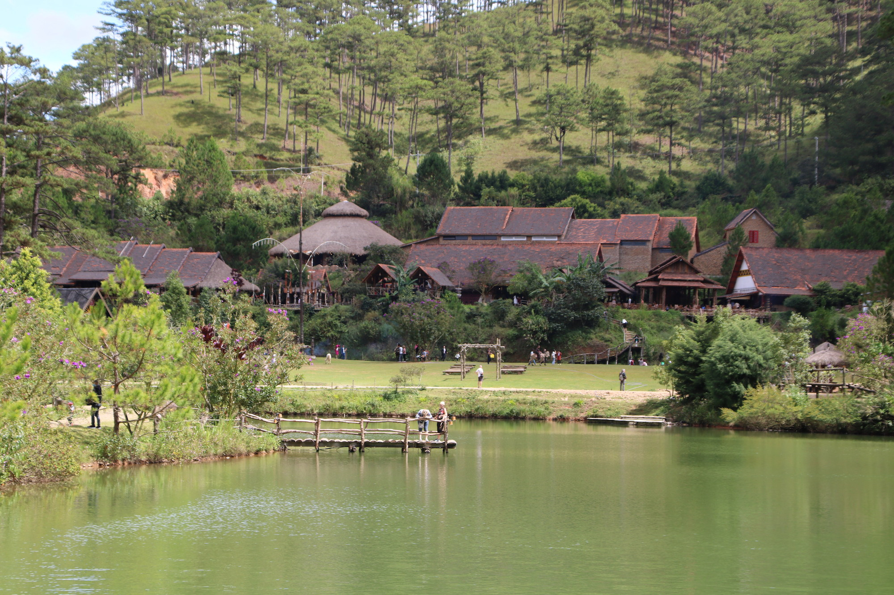
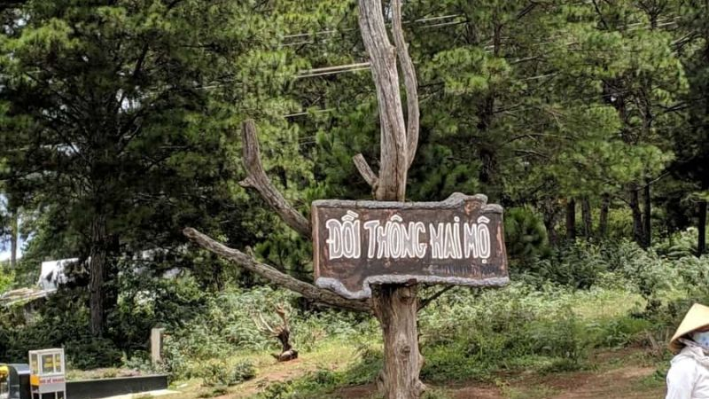

Thành phố Đà Lạt, thuộc tỉnh Lâm Đồng, nằm trên cao nguyên Lâm Viên ở miền Nam Việt Nam, nổi tiếng với khí hậu mát mẻ quanh năm, phong cảnh thiên nhiên tuyệt đẹp, và biệt danh "Thành phố ngàn hoa." Với độ cao khoảng 1.500 mét so với mực nước biển, Đà Lạt có nhiều danh lam thắng cảnh như hồ Xuân Hương, Thung lũng tình yêu, Nhà thờ Domaine de Marie và vườn hoa thành phố. Thành phố cũng nổi tiếng với kiến trúc cổ điển của Pháp và các điểm tham quan như nhà thờ Con Gà, ga Đà Lạt và trường Cao đẳng Sư phạm Đà Lạt.
Ngoài ra, Đà Lạt còn là nơi lý tưởng để trải nghiệm các hoạt động du lịch nông nghiệp với những trang trại dâu tây và vườn rau xanh mướt. Đây là điểm đến hấp dẫn cho du khách yêu thích thiên nhiên, nghệ thuật và sự yên bình.
Nhà thờ Domaine de Marie, hay còn được gọi là Nhà thờ Mai Anh, là một công trình kiến trúc nổi bật nằm trên ngọn đồi Mai Anh ở thành phố Đà Lạt, tỉnh Lâm Đồng. Được xây dựng vào cuối những năm 1930 theo phong cách kiến trúc châu Âu cổ điển kết hợp với nét Á Đông đặc trưng, nhà thờ thu hút du khách bởi màu hồng đặc trưng và thiết kế đơn giản nhưng tinh tế. Mái ngói dốc, không có tháp chuông, cùng các cửa sổ kính màu tạo nên nét độc đáo cho công trình.

Khuôn viên nhà thờ rộng lớn với không gian thoáng đãng, rợp bóng cây xanh và hoa mai anh đào mỗi độ xuân về. Đây cũng là nơi gắn liền với các hoạt động từ thiện của dòng Nữ tu Bác ái Thánh Vinh Sơn. Domaine de Marie không chỉ là điểm tham quan hấp dẫn mà còn mang ý nghĩa văn hóa, tôn giáo sâu sắc, thu hút du khách đến để chiêm ngưỡng vẻ đẹp kiến trúc và tận hưởng không khí thanh bình của Đà Lạt.
Hồ Tuyền Lâm là một trong những danh thắng nổi tiếng và thơ mộng nhất tại thành phố Đà Lạt, tỉnh Lâm Đồng. Nằm cách trung tâm thành phố khoảng 6 km về phía Nam, hồ được bao quanh bởi những rừng thông bạt ngàn và những ngọn đồi xanh mướt, tạo nên khung cảnh yên bình và lãng mạn. Hồ có diện tích khoảng 350 ha, là hồ nước ngọt lớn nhất Đà Lạt, được hình thành từ con suối Tía chảy qua dãy núi Voi.

Tuyền Lâm không chỉ là điểm đến lý tưởng cho du khách yêu thiên nhiên mà còn nổi tiếng với các hoạt động du lịch như chèo thuyền kayak, cắm trại, câu cá và khám phá rừng. Nơi đây còn có nhiều khu nghỉ dưỡng và điểm tham quan hấp dẫn như thiền viện Trúc Lâm, tạo nên một không gian nghỉ dưỡng trong lành và thanh tịnh. Với vẻ đẹp hoang sơ và thơ mộng, hồ Tuyền Lâm trở thành điểm dừng chân không thể bỏ qua khi đến với thành phố ngàn hoa Đà Lạt.
Chợ Đà Lạt, nằm ngay trung tâm thành phố Đà Lạt, là một điểm đến hấp dẫn và sầm uất, thu hút đông đảo du khách đến tham quan và mua sắm. Được mệnh danh là "trái tim của thành phố ngàn hoa," chợ không chỉ là nơi giao thương hàng hóa mà còn là nơi thể hiện rõ nét văn hóa địa phương. Tại đây, du khách có thể tìm thấy vô số sản vật tươi ngon như rau củ, trái cây, hoa tươi, cùng các món đặc sản nổi tiếng như mứt, trà atiso, dâu tây, và các sản phẩm thủ công mỹ nghệ.

Chợ Đêm Đà Lạt, còn gọi là "chợ Âm Phủ," là một phần đặc biệt của chợ Đà Lạt, nổi tiếng với không khí nhộn nhịp và các món ăn đường phố hấp dẫn như bánh tráng nướng, sữa đậu nành nóng, và khoai lang nướng. Với khung cảnh rực rỡ ánh đèn và hương vị thơm ngon, chợ Đà Lạt mang đến trải nghiệm khó quên cho bất kỳ ai đến thăm thành phố mộng mơ này.
Thung Lũng Tình Yêu là một trong những điểm du lịch nổi tiếng và lãng mạn nhất tại Đà Lạt, tỉnh Lâm Đồng. Nằm cách trung tâm thành phố khoảng 5 km về phía Bắc, thung lũng được bao quanh bởi những rừng thông bạt ngàn và những con suối nhỏ uốn lượn, tạo nên phong cảnh hữu tình và thơ mộng. Với không gian thiên nhiên tươi đẹp, bầu không khí trong lành và mát mẻ, nơi đây là điểm đến lý tưởng cho các cặp đôi và du khách yêu thích khung cảnh yên bình.

Thung Lũng Tình Yêu nổi bật với những con đường hoa rực rỡ, cây cầu tình yêu, và biểu tượng trái tim khổng lồ, gợi lên sự lãng mạn và ngọt ngào. Du khách có thể tham gia các hoạt động thú vị như đi thuyền pedalo trên hồ Đa Thiện, leo núi hoặc dạo bộ ngắm cảnh. Với vẻ đẹp tự nhiên quyến rũ và không gian đầy chất thơ, Thung Lũng Tình Yêu luôn là biểu tượng của tình yêu và hạnh phúc trong lòng những ai ghé thăm.
Làng Cổ Đà Lạt là một điểm đến hấp dẫn mang đậm dấu ấn văn hóa và lịch sử giữa lòng thành phố ngàn hoa. Nằm cách trung tâm Đà Lạt khoảng 5 km, ngôi làng tái hiện lại khung cảnh bình dị của Đà Lạt xưa với những ngôi nhà gỗ cổ kính, mái ngói rêu phong, và không gian mộc mạc đậm chất cao nguyên. Mỗi góc nhỏ trong làng đều gợi nhớ về những năm tháng đầu thế kỷ 20 khi Đà Lạt còn mang đậm phong cách kiến trúc Pháp kết hợp với nét văn hóa bản địa.

Đến với Làng Cổ Đà Lạt, du khách không chỉ được chiêm ngưỡng các công trình cổ mà còn có cơ hội tìm hiểu về đời sống, phong tục của người dân địa phương và thưởng thức những món ăn đặc sản mang hương vị xưa. Đây là nơi lý tưởng để cảm nhận vẻ đẹp hoài niệm và tìm kiếm phút giây bình yên giữa nhịp sống hiện đại.
Hồ Xuân Hương là biểu tượng thơ mộng và nổi bật của thành phố Đà Lạt, tỉnh Lâm Đồng. Nằm ngay trung tâm thành phố, hồ có hình lưỡi liềm, trải dài khoảng 25 ha và được bao bọc bởi rừng thông xanh mát cùng những thảm cỏ và vườn hoa rực rỡ sắc màu. Được đặt tên theo nữ thi sĩ nổi tiếng của Việt Nam, hồ Xuân Hương mang đến vẻ đẹp dịu dàng và lãng mạn, là điểm đến yêu thích cho những ai muốn tận hưởng không khí trong lành và phong cảnh nên thơ.

Các hoạt động như đạp vịt, đi xe ngựa quanh hồ, hoặc đơn giản là tản bộ ngắm cảnh giúp du khách thư giãn và cảm nhận vẻ đẹp yên bình của Đà Lạt. Vào buổi sáng sớm hoặc chiều tối, mặt hồ phản chiếu ánh sáng mờ ảo, tạo nên khung cảnh quyến rũ lòng người. Hồ Xuân Hương không chỉ là nơi nghỉ ngơi lý tưởng mà còn là tâm điểm văn hóa và sự kiện lớn của thành phố ngàn hoa.
Đồi Thông Hai Mộ là một địa danh nổi tiếng và đầy chất thơ nằm bên bờ hồ Than Thở, cách trung tâm thành phố Đà Lạt khoảng 6 km về phía Đông. Đồi được bao phủ bởi rừng thông xanh mướt và là nơi lưu giữ câu chuyện tình yêu đầy bi thương của một đôi trai gái trẻ vào giữa thế kỷ 20. Truyền thuyết kể rằng vì không thể đến với nhau, họ đã chọn cái chết để giữ trọn tình yêu, và hai ngôi mộ của họ được chôn cất cạnh nhau trên đồi thông, trở thành biểu tượng cho tình yêu vĩnh cửu.

Không chỉ thu hút du khách bởi câu chuyện tình buồn, Đồi Thông Hai Mộ còn mang vẻ đẹp yên bình và lãng mạn, là điểm đến lý tưởng cho những ai yêu thích không gian thiên nhiên hoang sơ, thơ mộng. Đến đây, du khách có thể thả mình trong khung cảnh mộng mơ, nghe gió thông reo và cảm nhận vẻ đẹp trầm lắng của Đà Lạt.